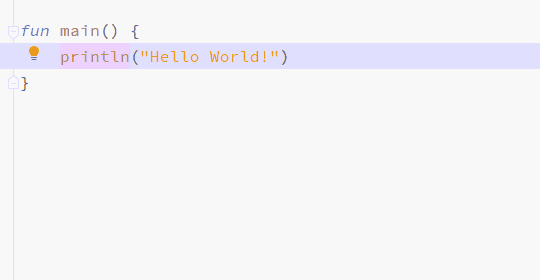
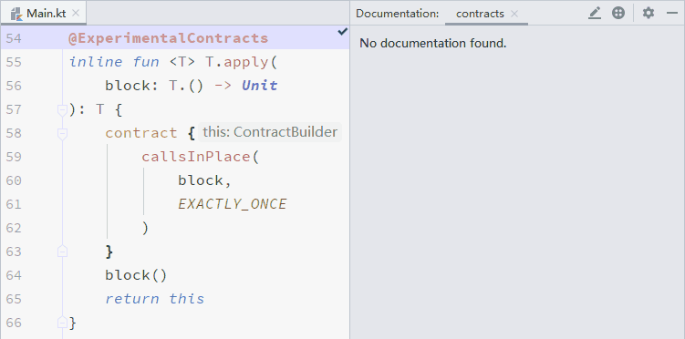
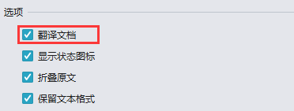
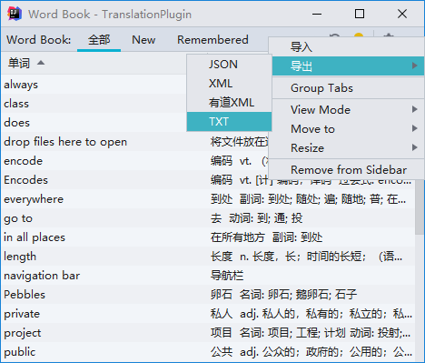

欢迎使用Translation v2.9，此版本中包含了以下主要更新：
- Quick Documentation翻译 - 支持对Quick Documentation进行翻译
- 单词本txt文本导出 - 单词本支持导出为txt文本
如果您想在线阅读此发行说明，请访问这里。
翻译
Quick Documentation翻译
感谢 Nikolay Tropin(来自 JetBrains) 提供的功能实现！
我们增加了对 Quick Documentation 的翻译的支持。现在，你可以随时随地对代码中的文档进行翻译，而不是受限于源代码中的文档注释。例如在 Windows 平台中，当你使用 Ctrl + Q 查看 Quick Documentation 时，你得到的将是已翻译好的文档。


Quick Documentation 翻译选项是默认开启的，如果你想关闭此选项，可到在插件配置页面进行关闭。
单词本
导出为txt文本
感谢 Kaiattrib 提供的功能实现！